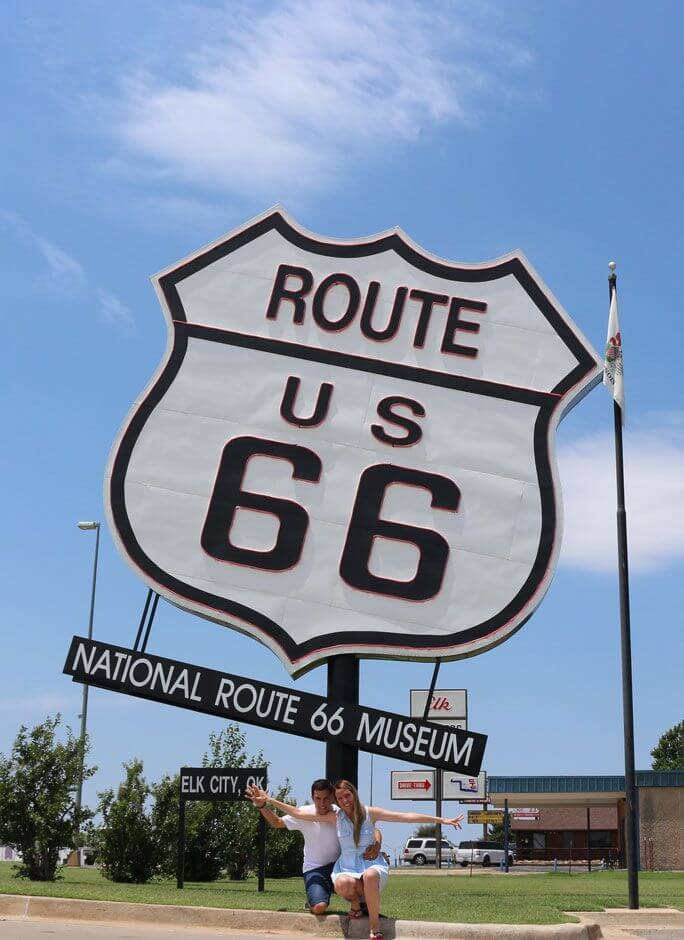
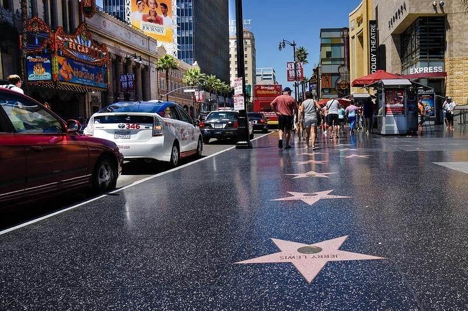
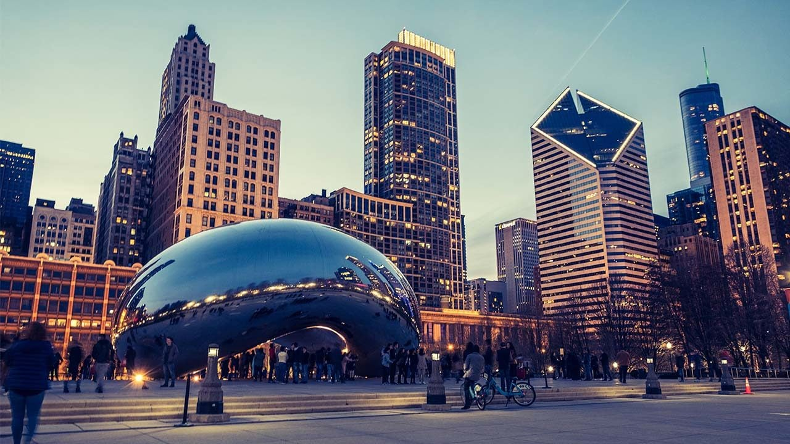

🗽 Nueva York — El latido del mundo

Nueva York me recibió con una mezcla de ruido, energía y asombro.
Cada día fue diferente, intenso y lleno de descubrimientos.
Llegada y primeras impresiones
Aterrizar en Nueva York fue como entrar en una película: taxis amarillos, rascacielos,
pantallas gigantes y una vida que nunca se detiene.
Central Park, museos y arte
Pasé la mañana recorriendo Central Park: ardillas, músicos y puentes llenos de encanto.
Era un oasis dentro del caos.
Puente de Brooklyn y Top of the Rock
Crucé el Puente de Brooklyn al atardecer, mientras la ciudad se iluminaba poco a poco.
🎭 Washington D.C., Filadelfia y Boston — Historia y conocimiento
La segunda semana estuvo llena de historia, museos y barrios que cuentan historias.
Museos
Los museos Smithsonian me atraparon durante horas. El Museo del Aire y del Espacio fue inolvidable.
Barrios
Georgetown y Beacon Hill fueron mis favoritos: elegancia, ladrillo rojo y ambiente cálido.
🛣️ Ruta 66, Chicago y el corazón del país

Chicago — Arquitectura y viento helado
La Willis Tower, el Millennium Park y la deep-dish pizza marcaron mi paso por Chicago.
Inicio de la Ruta 66
La carretera se extendía frente a mí como un viaje al pasado: moteles retro y cafés de carretera.
Oklahoma, Texas y Arizona
Atardeceres naranjas, desiertos rojos y estrellas infinitas: el tramo más mágico de la ruta.
🏜️ El Gran Oeste — Los Ángeles, San Francisco, parques y costa

Parques y maravillas naturales
El Gran Cañón me dejó sin palabras, una obra maestra natural.
Las Vegas
Las Vegas brillaba como un espejismo eléctrico. El Strip era un espectáculo por sí mismo.
Los Ángeles y la Highway 1
Playas interminables y el viaje más bonito: la Highway 1 rumbo a San Francisco.
🌉 San Francisco

El Golden Gate y la neblina
El puente aparecía y desaparecía entre nubes, como si jugara conmigo.
Barrios icónicos
Chinatown, Haight-Ashbury y North Beach me regalaron cultura, arte y personalidad.
Gastronomía y cultura
El clam chowder dentro de un pan en Fisherman’s Wharf fue un momento inolvidable.
✈️ Regreso a casa

Desde la ventanilla del avión, repasé cada recuerdo del viaje:
luces, desiertos, ciudades, carreteras y mucha libertad.